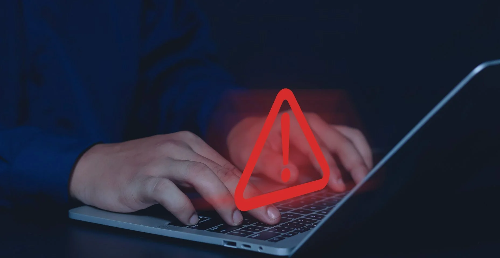
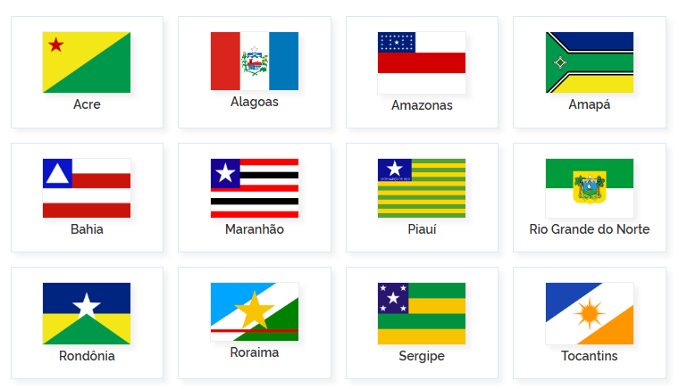
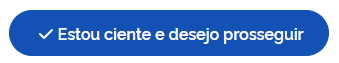
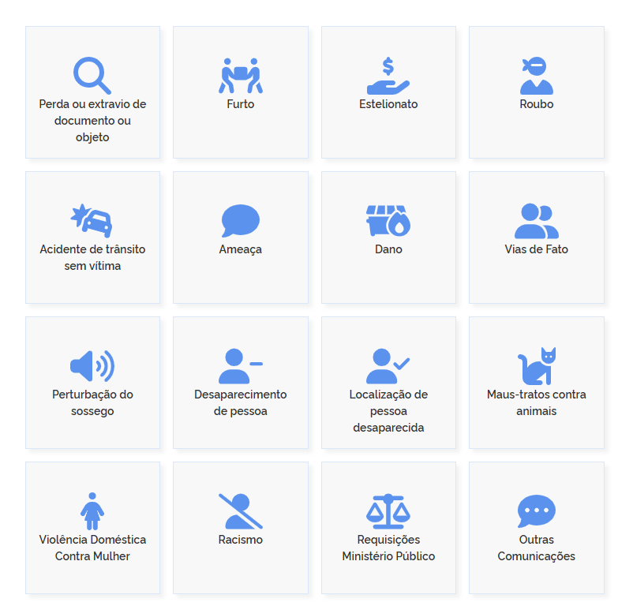
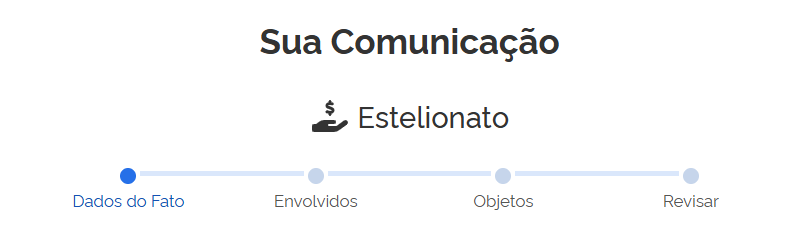

Vivemos em uma era digital em que grande parte das nossas atividades acontece pela internet — pagamentos, compras, conversas e até atendimentos bancários. No entanto, junto com essa facilidade, também aumentaram os casos de golpes virtuais. Criminosos utilizam estratégias cada vez mais sofisticadas para enganar vítimas, roubar dados pessoais e obter vantagens financeiras indevidas.
Saber identificar os sinais de um golpe é o primeiro passo para se proteger. Promessas de dinheiro fácil, mensagens com senso de urgência, links suspeitos e pedidos de informações confidenciais são alguns dos principais indícios de fraude. A informação é a melhor ferramenta de defesa.
Além de reconhecer essas tentativas, é fundamental saber como agir caso você seja vítima. Registrar um Boletim de Ocorrência online e comunicar imediatamente o banco são medidas essenciais para aumentar as chances de investigação e possível recuperação do valor perdido.
Este site foi criado com o objetivo de orientar, de forma simples e prática, como identificar golpes virtuais, como denunciá-los corretamente e quais providências tomar para proteger seus direitos e seu patrimônio.
Como fazer o Boletim de Ocorrência online (passo a passo)
Você pode registrar um B.O pela Delegacia Eletrônica clicando no botão abaixo:
Passo 1

Passo 2

Passo 3

Passo 4
Passo 5

Tutorial em vídeo
Reembolso de Transações Financeiras em Caso de Golpe
Quando uma pessoa realiza um Pix, TED, transferência ou pagamento após ser enganada por um golpista, é possível solicitar ao banco a contestação da transação.
Quando solicitar?
✔ Transferência feita após golpe
✔ Pix realizado sob indução a erro
✔ Movimentação não autorizada
✔ Pagamento de produto inexistente
E se o banco não responder?
1. Reclamação no Banco Central
O Banco Central fiscaliza as instituições financeiras e exige resposta formal do banco.
2. Procure o Procon
O Procon pode intermediar o conflito entre consumidor e banco.
3. Guarde documentação
Mantenha comprovantes da transação, protocolos e o boletim de ocorrência.
4. Avalie ação judicial
Pode ser possível ingressar no Juizado Especial Cível.